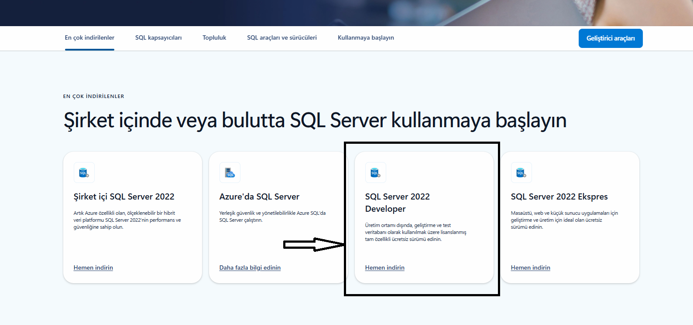
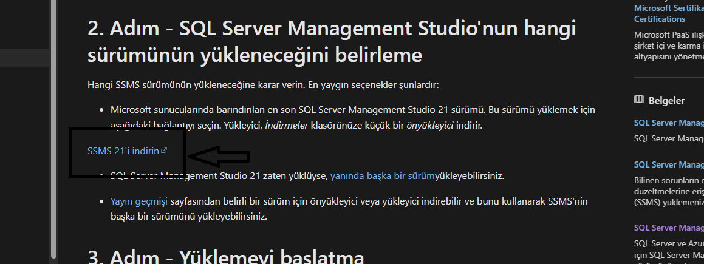

ns.sancar7
Ana Sayfa
Kaynaklar
İletişim
Site Admini Hepinize Sınavda Başarılar Diler. 🫡
Dersler / Final
Türk Dili-II
Atatürk İlkeleri ve İnkılap Tarihi-II
Blok Zincir
Yazılım Güvenliği
Veri Tabanı Yönetim Sistemleri-II
Kariyer Gelişimi
Öğrenim Yönetim Sistemleri
İngilizce-II
İş Sağlığı ve Güvenliği
Veri Tabanı Yönetim Sistemleri-II
Vize Notları
Dosyayı indir
İçeriği Görmek için Tıklayınız!
Final Notları
Dosyayı indir
İçeriği Görmek için Tıklayınız!
SQL Server Management Studio Kurulumu
İçeriği Görmek için Tıklayınız!
İlk adımda indireceğiniz program:
Sayfa Linki

İkinci adımda indireceğiniz program:
Sayfa Linki

Questions and Notes from Teams Documentation